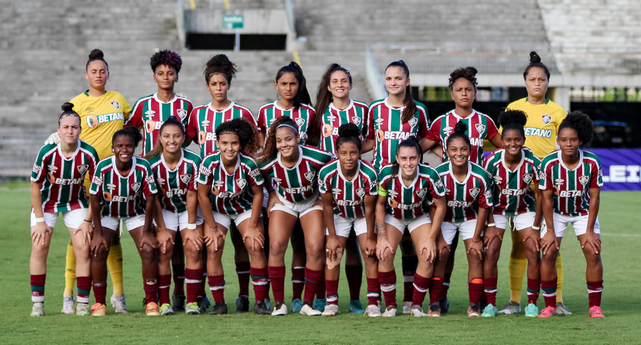
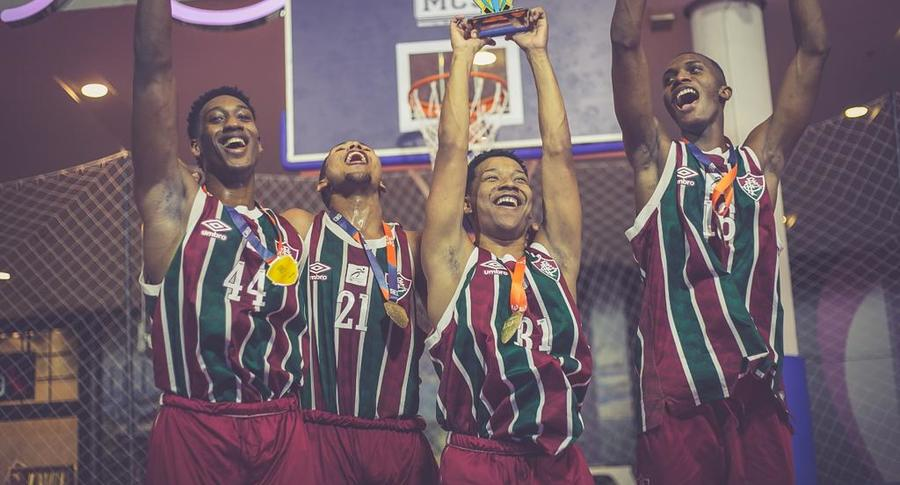
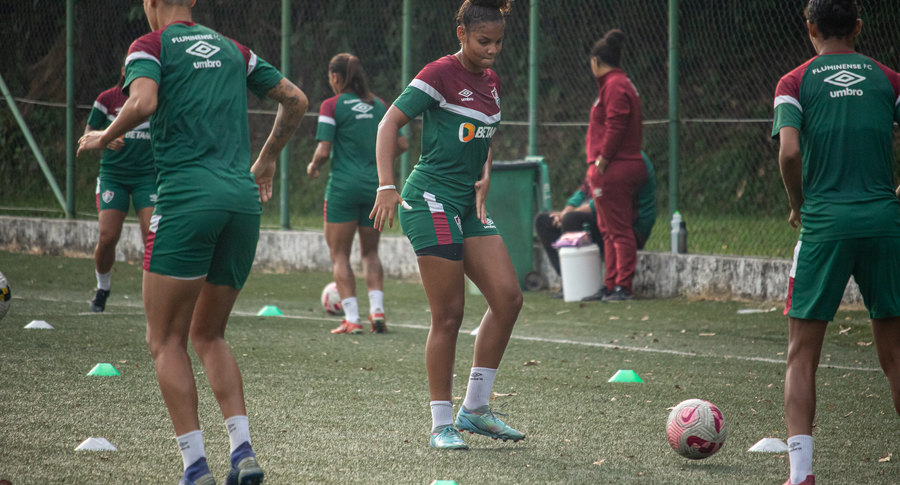
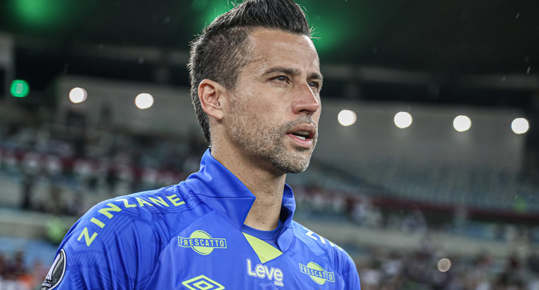

Sub-17 do Flu engata série invicta e mira semifinal da Copa Rio
Moleques de Xerém duelam com o Vasco na decisão.
A equipe Sub-17 do Fluminense concluiu em alta a campanha na primeira fase da Copa Rio. Invicto há três jogos, o Tricolor avançou na competição ao emplacar no fim do turno uma sequência de expressivos triunfos. A garotada venceu por goleada os duelos diante de Audax (8 a 0), Resende (5 a 2) e Serra Macaense (5 a 0), sendo o segundo como visitante. O adversário dos Moleques de Xerém na semifinal é o Vasco.
Flu encara o Fortaleza para carimbar vaga nas quartas no Brasileirão Feminino Sub-20

Capitã do time, Duda Cerqueira mira mais uma vitória na última rodada da primeira fase
O último desafio do Fluminense pela primeira fase do Brasileiro Feminino Sub-20 será diante do Fortaleza, nesta quarta-feira (31/05), às 15h, em Laranjeiras. Com a melhor campanha da competição, as Meninas de Xerém vão em busca da vitória para garantir a liderança geral e a classificação para as quartas de final da competição.
Fluminense é campeão da 1ª Etapa do Carioca Sub-18 3x3 de basquete

A conquista foi garantida com a vitória por 21 a 9 sobre o CCL
O Fluminense sagrou-se campeão da 1ª Etapa do Campeonato Carioca Sub-18 3x3 de basquete. Na competição, que contou com oito equipes e foi disputada no modelo de eliminatória simples, os atletas Pedro Ramos, Luiz Filipi, Lucas Bastos e Lázaro Hilário garantiram o título sob comando da técnica Elen Rosa, nesta sexta-feira (26/05), no Shopping Bossa Nova Mall.
Flu encara o São José em jogo decisivo pelo Brasileiro Feminino A2

Guerreiras vão em busca da classificação para a segunda fase
O Fluminense volta a campo pelo Brasileiro Feminino A2 neste domingo (28/05), às 15h, para enfrentar o São José no Estádio Martins Pereira. A partida é válida pela última rodada da primeira fase e vale a classificação para as quartas de final.
Fábio se isola como o brasileiro com mais jogos na história da Libertadores

Goleiro tricolor alcançou a marca importante contra o The Strongest-BOL na Libertadores
Quando a bola rolou para a partida desta quinta-feira (25/05), contra o The Strongest-BOL, Fábio vai escreveu mais um importante capítulo em sua carreira. O goleiro tricolor completou 91 jogos e se isola como o brasileiro que mais entrou em campo pela Conmebol Libertadores.